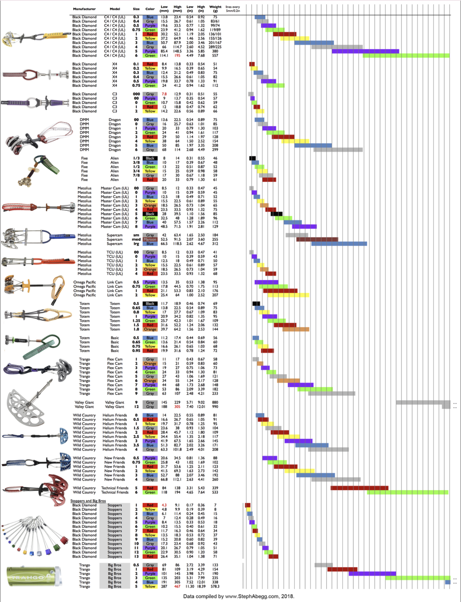
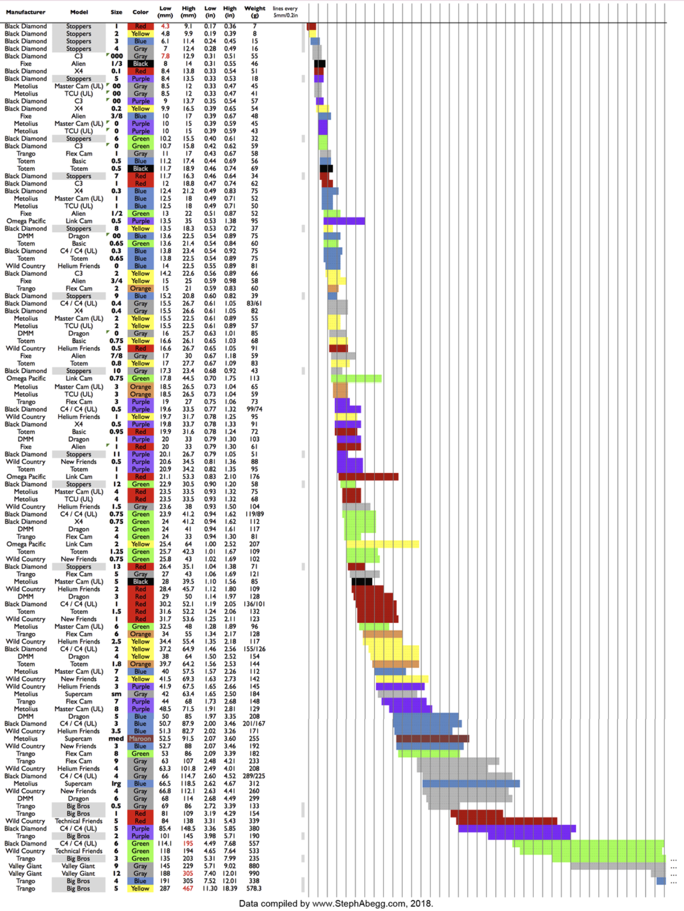

By Cole Rutkowski
Spring Loaded Camming Devices (SLCD), or cams, work by translating a downward force into an outward force. Friction between the cam and the rock is the primary force that counteracts the weight of a fall.
To understand how cams work, we can first think of Spiderman standing between two walls
(pictured below). To stay in place, he has to push outwards against the wall with his feet.
Gravity is trying to pull him down, but what force counteracts gravity? Friction! The
harder he pushes against the wall, the stronger the frictional force that holds him up.
This frictional force is proportional to the outward force and the CoF
between his shoes and the wall.
A coefficient of friction (CoF), a unitless constant,
is the ratio of the frictional force resisting motion and
the normal force between two surfaces1. The CoF between two
surfaces can be determined through experimentation. Since the coefficient of friction is
constant, Spiderman only has to push as hard as his weight times the coefficient of friction (forceout = weight x CoF).
If he wears his backpack, he must push even harder against the wall. He can push as hard
as he wants above the minimum outward force to stay in place, but if he pushes less than
the minimum he will begin to slip!
If you look closely, you’ll see Spiderman’s legs aren’t horizontal, they’re at an angle. To understand why that is, let’s next think about how a ladder stays up. when setting up a ladder against a house, you will find that the ladder slips if you place the base too far away from the house (see image below). This is because there needs to be enough downward (normal) force for the friction to counteract the horizontal (tangential) force, and the ratio of the two depends on the angle of the ladder. Thus, if the angle between the ladder and the house is too big (or the ladder and ground is too small), then the ladder slips!
Now that you understand how Spiderman and ladders both use friction to keep from slipping, we can look at cams. Cams work in the same way; they rely on friction between the cam lobes and wall and need to contact the wall at an angle that prevents slipping. In the pictures below, we will look at the free body diagrams of cams and derive an equation for the maximum allowable camming angle, or angle of its tangent.
As shown, the maximum camming angle is dependent on the coefficient of friction (CoF) between the cam and the rock. The CoF is highly variable, depending on the rock type and surface conditions. Moss, dirt, and water will significantly decrease the CoF. However, reports suggest that the CoF is as high as .53 on some sandstone and quartzite and as low as .34 on limestone and basalt against aluminum 61062. Without more definitive testing reports, μ = .3 is a reasonable minimum CoF to use for our calculations. Plugging this value into our equation, we get that the maximum camming angle α is 17°. An angle of 17° or less would be enough to keep our cam in place. We should give ourselves some margin for error from non-ideal conditions, so we will use 13.5° for the rest of our calculations. For α = 13.5° the minimum CoF is μ = .24.
Looking at our diagrams above, you will see that the width of the wall/crack is the same. But cracks vary, so what if we had a wider or narrower crack? And since we’ve determined the best camming angle, how can we make a device that can adjust to the size of the crack while maintaining the same camming angle? What we need is a shape where the angle of the tangent remains constant as the radius increases.
This is where the logarithmic spiral comes into play. The logarithmic spiral is a type of spiral that maintains a constant tangential angle along every point of the spiral, the golden spiral being a well-known special case. The logarithmic spiral can be found in many places in nature, including weather systems, galaxy formation, pinecones, flower petals, and the flight path of peregrine falcons. When you hear the saying "like a moth to a flame", you should think of the logarithmic spiral, because that’s the shape in which they circle the flame3!
Below is the formula for a logarithmic spiral4. In our case, a is the minimum cam radius when θ = 0, and b = tan(α), the tangent of the camming angle. If we designed a cam with a camming angle of 13.5° to fit into a 2” crack at its most cammed position, we would set a = 1 (2” = diameter so 1” = radius) and b = tan(13.5°).
Taking a portion of a logarithmic spiral and rotating it about the center, we can finally see how it can work as a cam lobe! Below, I took a screenshot of the curve from Desmos and overlaid it on the previous figures. By increasing the angle Φ, we decrease the radius, allowing the cam to fit in varying size cracks! (Note that Φ = θ - π/2 when referencing the diagram and Desmos equation). It is important to recognize that, mathematically, only a single point is contacting the wall, while the rest of the cam lobe is not. Thus, the equations we previously derived still apply.
Looking at the shape of a cam, it is apparent that only ≈90° of the curve can be used for each cam lobe. That means that there is a minimum and maximum width crack a specific cam can fit in, so we need to make different size cams to fit a range of crack widths. Looking at our equations for the curve, you will see that adjusting the camming angle changes the range of the cam. Looking at the calculations below, you can see that a cam with camming angle α = 17° has 10.86% more range than one with α = 13.5°.
However, as we learned before, the CoF must be greater than or equal to the tangent of the camming angle (μ ≥ tan(α)) for the cam to not slip. If we increase α, tan(α) increases and thus μmin must also increase. So by increasing the camming angle we effectively decrease the maximum holding power of the cam.
Graph 1: Cam Ranges5
Graph 2: Cam Ranges6
Now that we understand how cams got their shape, we should briefly discuss the roll of springs in cams. The spring and trigger are incredibly important features of SLCD’s that allow the cam to be placed and removed. Springs force the cam to engage when no load is applied. This provides a small outward force that is enough to keep the cam from slipping when unweighted. Pulling the trigger disengages the cam, allowing the cam to fold in. This makes it possible for the cam to be placed in a crack before expanding to contact the rock as well as being contracted to pull it out of the crack. If the spring is too weak the cam is at risk of walking within the crack. If the spring is too strong, it will be hard for the climber to retract the lobes.
1: https://www.britannica.com/science/coefficient-of-friction
2: https://www.mountainproject.com/photo/107148485/frictional-coefficients-between-aluminum-and-rock
3: https://core.ac.uk/download/pdf/228825739.pdf
4: https://old.nationalcurvebank.org/log/log.htm
5: https://mountainproject.com/assets/photos/climb/114249303_large_1523408128.jpg?cache=1702863636
6: https://mountainproject.com/assets/photos/climb/114249304_large_1523408162.jpg?cache=1699769866
7: https://www.wildcountry.com/media/pdf/c9/92/40/Wild-Country-Cam-book.pdf